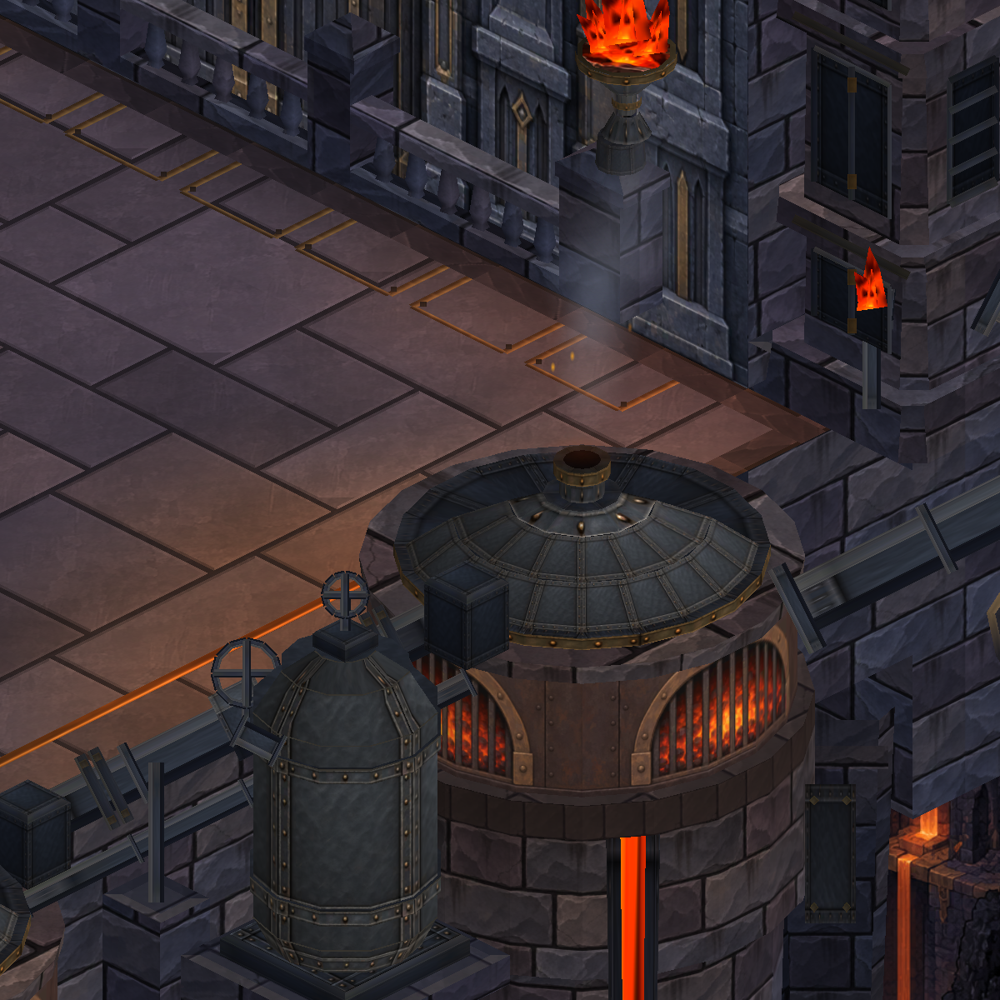
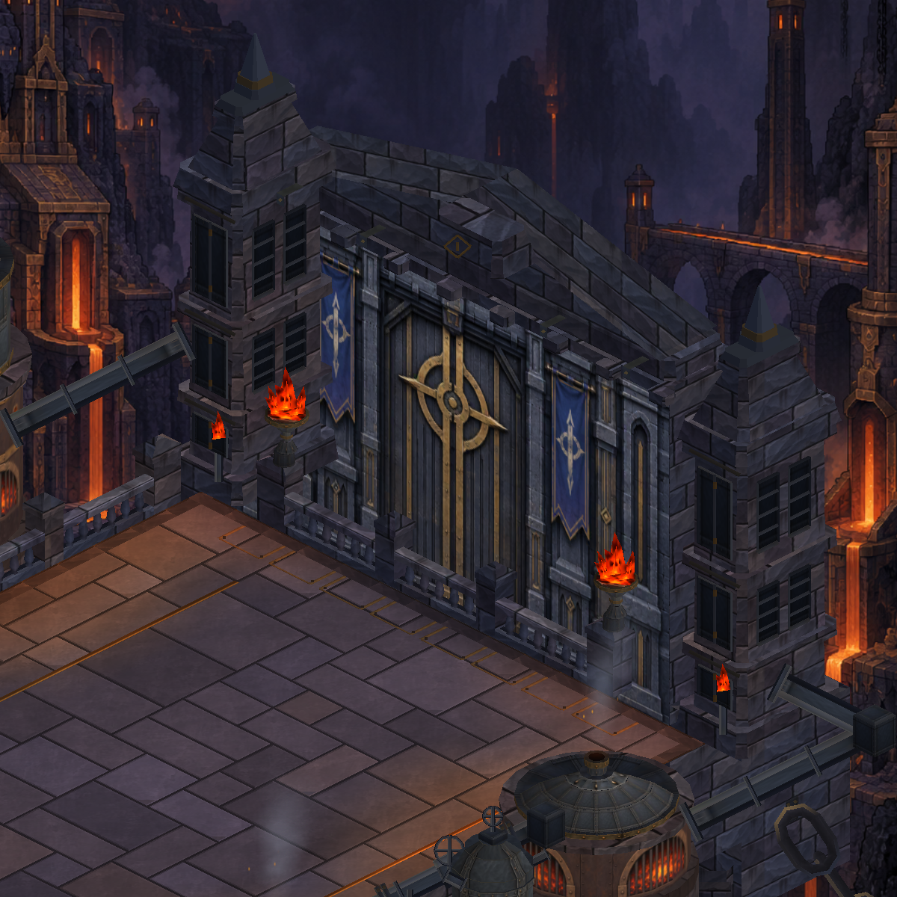
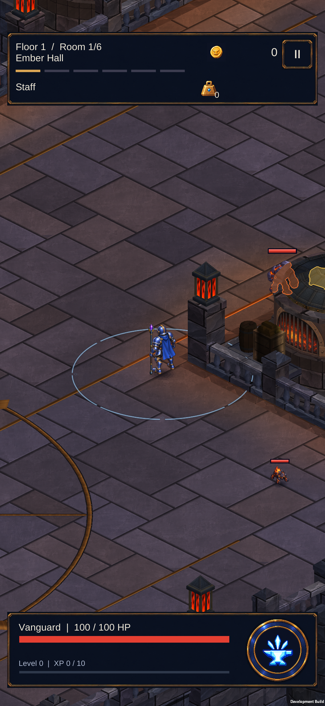

Dökümhane — atölye eşyaları
Kasaların tahta yüzeyleri ve çapraz destekleri, varillerin dilimleri ve kapakları, çuvalların kat izleri birlikte geliştirildi. Solda önce, sağda sonra; gerçek Unity görüntüleri.
17 statik çizim grubu. Geometri: 76.492 → 78.232 köşe. Doğrulama kaydı
workshop-detail — önce / sonra
furnace-detail — önce / sonra


overview — önce / sonra
gate-detail — önce / sonra


545 test geçti; Android paketi hazır. Telefona yüklendi; görüntü ve hareket kontrolü tamamlandı.
Telefonda önce / sonra
Sabit inceleme: 59,9 FPS, GPU 3,8 ms, 57 çizim. Profil korundu.
Hareket kontrolü
